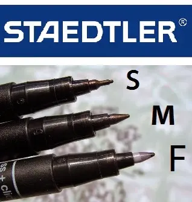
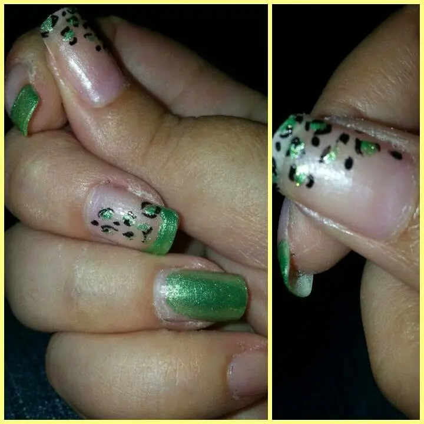

nail art proposta di maggio
Salve amiche mie...
Che bello..finalmente è maggio e questo vuol dire soleeeee, giornate lunghe e tanto Buon umore ^_^
Con un tempo così mi viene più la voglia e la fantasia per le mie unghiette..
E infatti oggi voglio farvi vedere un effetto molto carino ed anche molto semplice da fare.
Ciò che ho usato è stato solo:
● Smalto rosato (per intenderci quello che usate dopo aver fatto il french classico).
● Smalto verde pistacchio shimmer.
● Penna a pennarello a punta fine (vi posto una foto per farvi capire).

Ecco, queste penne che scrivono bene anche sulle unghie, io uso la lettera S perché é più sottile ma a volte anche la lettera M non è male.Ho voluto ricreare l'effetto tigrato, so che con il verde non c'entra molto ma mi piaceva provare e in effetti a me è piaciuto molto com'è venuto.
Vi mostro la foto:

Et voilà :D
Siate sinceri e ditemi la vostra :*